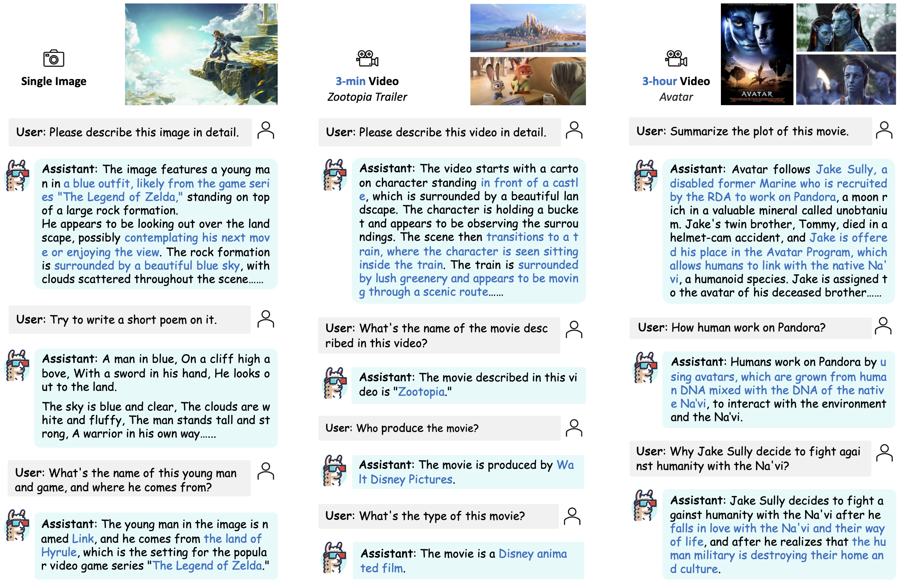
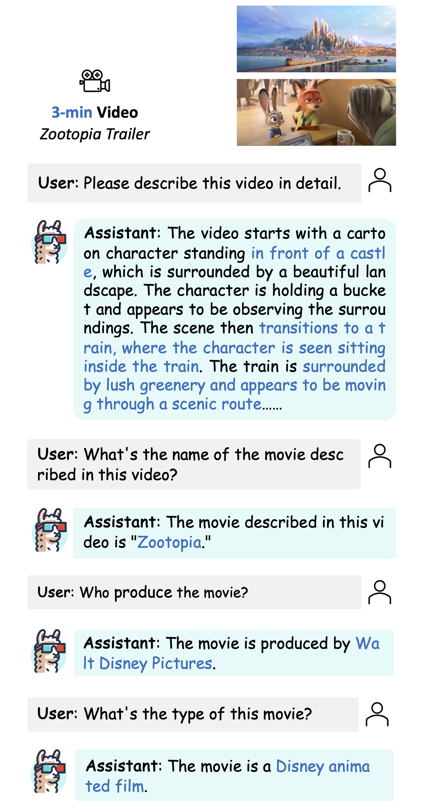
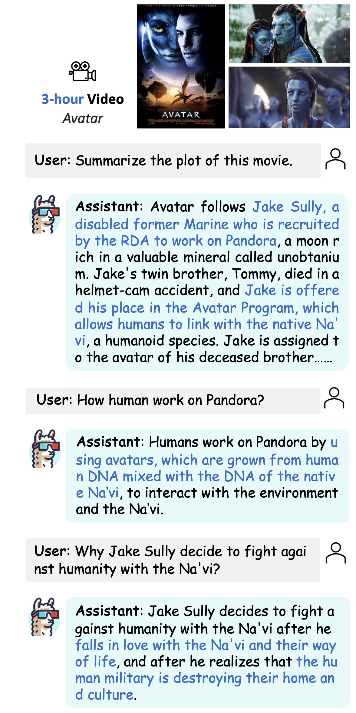

Updates: LLaMA-VID is comming! We release the paper, code, data, models, and demo for LLaMA-VID.
Comming Soon!
We present a novel method to tackle the token generation challenge in Vision Language Models (VLMs) for video and image understanding, called LLaMA-VID. Current VLMs, while proficient in tasks like image captioning and visual question answering, face computational burdens when processing long videos due to the excessive visual tokens. LLaMA-VID addresses this issue by representing each frame with two distinct tokens, namely context token and content token. The context token encodes the overall image context based on user input, whereas the content token encapsulates visual cues in each frame. This dual-token strategy significantly reduces the overload of long videos while preserving critical information. Generally, LLaMA-VID empowers existing frameworks to support hour-long videos and pushes their upper limit with an extra context token.
LLaMA-VID simplely contains three prats: encoder and decoder are adopted to produce visual embedding and text-guided features, respectively; context token and content token are transformed with the tailored token generation strategy; instruction tuning is designed to unleash the potential of LLMs for image and video.
@article{li2023llamavid,
title={LLaMA-VID: An Image is Worth 2 Tokens in Large Language Models},
author={Li, Yanwei and Wang, Chengyao and Jia, Jiaya},
journal={arXiv preprint arXiv:2311.17043},
year={2023}
}
This website is adapted from Nerfies, licensed under a Creative Commons Attribution-ShareAlike 4.0 International License.